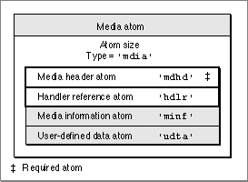

Media Atoms
Media atoms define the data for a movie track. The media atom contains information that specifies the component that is to interpret the media data, and it also specifies the data references. Figure 4-9 shows the layout of a media atom.Figure 4-9 The layout of a media atom

The media atom has an atom type of
'mdia'. It may contain other atoms, such as a media header ('mdhd'), a handler reference ('hdlr'), media information ('minf'), and user-defined data ('udta'). The only required atom in a media atom is the media header atom.You define a media atom by specifying these elements:
- Note
- The handler reference atom lets you know what kind of media this media atom contains--for example, video or sound. The layout of
the media information atom is specific to the media handler that is to interpret the media. "Media Information Atoms," which begins on page 4-18, discusses how data may be stored in a media, using the video media format defined by Apple as an example.
- Size. A long integer that specifies the number of bytes in this media atom.
- Type. A long integer that specifies the type of the data in this media atom (defined by the
'mdia'atom type).- Media header. The media header atom, which is described in the next section. It contains the standard media information.
- Media handler. The media handler, which is defined by the handler reference atom, described in "Handler Reference Atoms," which begins on page 4-13.
- Media information. The media information atom. For an example of a media information atom, see "Video Media Information Atoms," which begins on page 4-18.
- User data. The user-defined data atom associated with this media. This field is used for extension with new data types. See "User-Defined Data Atoms," which begins on page 4-14, for details.